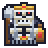

Live Skeleton Lord control Current skeleton/lord Idle frame with approved Form and Complete-B treatment. current native 24×24 cell
 48x48 Bone Reliquary King Matching two-pixel cluster weight with a larger crown, ceremonial axe, restrained rib cage, dark royal cloak, and red reliquary lantern. loading measured contract…